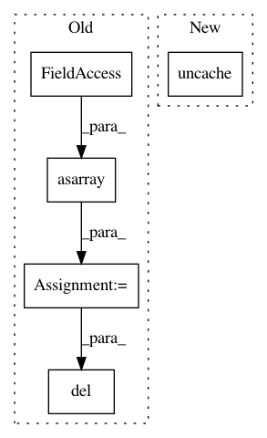

31775c422876534b0df7f26d253f2380db90d4b0,pynets/dmri/track.py,,prep_tissues,#Any#Any#Any#Any#Any#Any#,51
Before Change
// Loads mask and ensures it"s a true binary mask
mask_img = nib.load(B0_mask)
// Load tissue maps and prepare tissue classifier
gm_mask_data = np.asarray(nib.load(gm_in_dwi).dataobj)
wm_mask_data = np.asarray(nib.load(wm_in_dwi).dataobj)
vent_csf_in_dwi_data = np.asarray(nib.load(vent_csf_in_dwi).dataobj)
if tiss_class == "act":
background = np.ones(mask_img.shape)
background[(gm_mask_data + wm_mask_data + vent_csf_in_dwi_data) > 0] = 0
include_map = gm_mask_data
include_map[background > 0] = 1
tiss_classifier = ActStoppingCriterion(include_map, vent_csf_in_dwi_data)
del background
del include_map
elif tiss_class == "bin":
tiss_classifier = BinaryStoppingCriterion(wm_mask_data.astype("bool"))
elif tiss_class == "cmc":
voxel_size = np.average(mask_img.header["pixdim"][1:4])
After Change
del gm_mask_data, wm_mask_data, vent_csf_in_dwi_data
mask_img.uncache()
gm_img.uncache()
wm_img.uncache()
return tiss_classifier
In pattern: SUPERPATTERN
Frequency: 3
Non-data size: 5
Instances
Project Name: dPys/PyNets
Commit Name: 31775c422876534b0df7f26d253f2380db90d4b0
Time: 2020-03-21
Author: dpisner@utexas.edu
File Name: pynets/dmri/track.py
Class Name:
Method Name: prep_tissues
Project Name: dPys/PyNets
Commit Name: 01d18e835815feedeac2fbeff8025cdd94128eaa
Time: 2019-12-09
Author: dpisner@utexas.edu
File Name: pynets/fmri/clustools.py
Class Name: NilParcellate
Method Name: create_clean_mask
Project Name: dPys/PyNets
Commit Name: e4a36f3215735f8c351beb8f27edeb02eabb121f
Time: 2019-11-04
Author: dpisner@utexas.edu
File Name: pynets/fmri/clustools.py
Class Name:
Method Name: individual_clustering